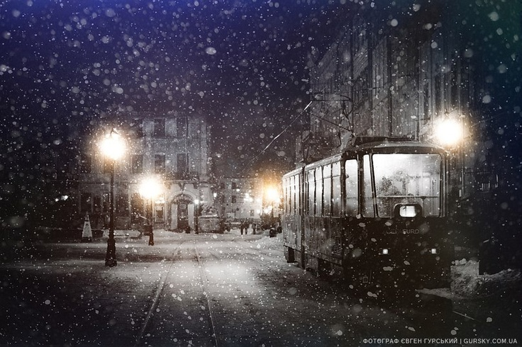
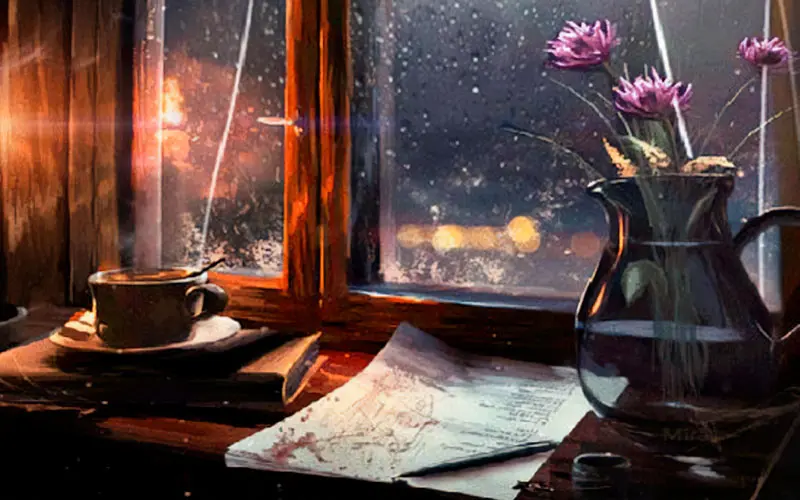
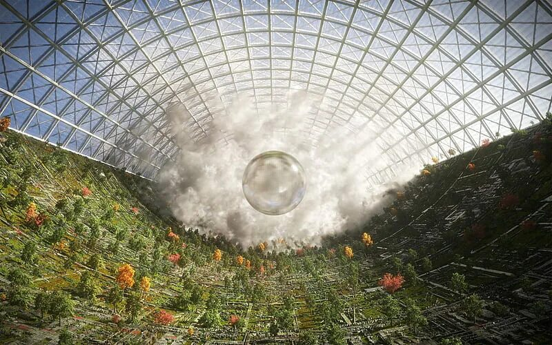

Мистика
Последний трамвай
Он ходил по маршруту, которого не было на картах. И каждый пассажир знал, куда едет.
Читать →Литературный проект
Небольшая цифровая библиотека коротких рассказов о людях, городах и тишине между словами.

Он ходил по маршруту, которого не было на картах. И каждый пассажир знал, куда едет.
Читать →
История о двух людях, которые жили в соседних домах и никогда не встречались.
Читать →
На станции, где не должно быть растений, расцвела яблоня. Никто не знал, кто её посадил.
Читать →Этот сайт — место для неспешного чтения. Здесь нет рекламы, бесконечной ленты и алгоритмов. Только короткие истории, которые можно прочитать за чашку кофе.
Проект сделан как учебная работа, но с любовью к тексту и типографике.
Узнать больше